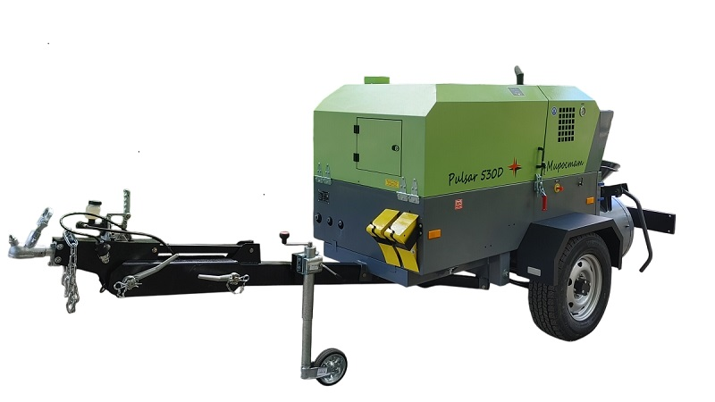
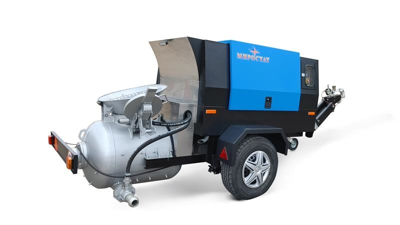

Пневмонагнетатели Миростат для стяжки полов


Представляем Вам новинку - отличное решение для механизации процесса укладки полусухой стяжки пола.
Технические характеристики пневмонагнетателя Pulsar 530 D
| Название | Значение |
|---|---|
| Производительность по подаче раствора | до 4,5 м3/ч |
| Высота / длина подачи | до 80 метров / до 160 метров |
| Рабочее давление компрессора | 8,0 атм |
| Производительность компрессора | 5,2 м3/мин |
| Максимальная крупность фракции | 16 мм |
| Объём бункера-смесителя геометрический | 300 л |
| Объём бункера-смесителя по раствору | 250 л |
| Диаметр подающего рукава | 65 мм |
| Двигатель дизельный | 41 кВт, 4 цил., атмосферный, с жидкостным охлаждением |
| Исполнение | Передвижной, на одноосном шасси с регулируемым по высоте дышлом |